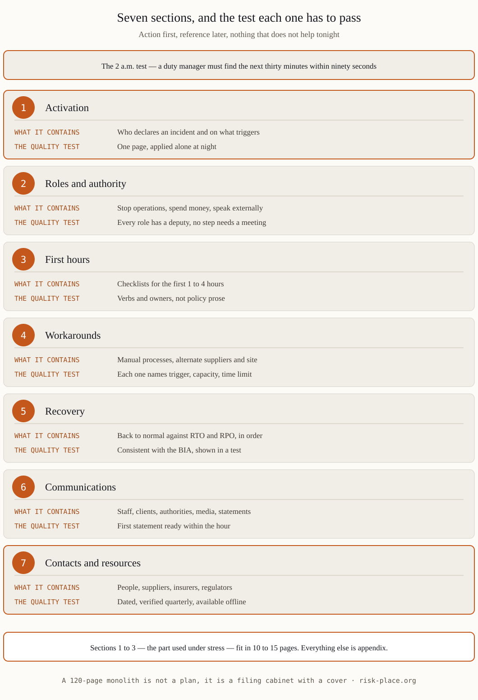

The test every plan must pass
At 2 a.m., mid-incident, a duty manager opens your BCP. If the answer to «what do I do in the next thirty minutes?» is not findable in ninety seconds, the plan has failed — whatever its page count. That single scenario dictates the architecture: action first, reference later, nothing that does not help tonight.
The structure, section by section
| Section | What it contains | The quality test |
|---|---|---|
| 1 · Activation | Who declares an incident, on what triggers, and how the plan is invoked | One page; a duty manager can apply it alone at night |
| 2 · Roles and authority | Named roles with written authority: stop operations, spend money, speak externally | Every role has a deputy; no step requires a meeting |
| 3 · First hours (checklists) | Scenario checklists for the first 1-4 hours: life safety, containment, notification | Verbs and owners, not policy prose |
| 4 · Workarounds | How priority activities run degraded: manual processes, alternate suppliers, alternate facility | Each workaround names its trigger, capacity and time limit |
| 5 · Recovery | Restoring activities to normal against RTO/RPO, in dependency order | Consistent with the BIA numbers, demonstrated in a test |
| 6 · Communications | Who informs staff, clients, authorities, media — with pre-drafted holding statements | First statement ready within the hour without legal drafting from scratch |
| 7 · Contacts and resources | People, suppliers, insurers, regulators; access codes location, alternate-site details | Dated, verified quarterly, available offline |
Length discipline: sections 1-3 — the part used under stress — should fit in 10-15 pages. Everything else is appendix. A 120-page monolith is not a plan; it is a filing cabinet with a cover.

Why downloaded templates fail
- They start from documents, not from the BIA. A template cannot know your critical activities, downtime costs or recovery objectives — and without them every section is furniture.
- Generic roles. «The crisis manager coordinates response» assigns nothing. A real plan names people, deputies and the limits of their authority in dirhams and decisions.
- No workarounds. Templates recover systems; businesses survive on workarounds while systems recover. The manual-process section is usually the difference between inconvenience and shutdown.
- Never exercised. A template that has not been tested against a realistic scenario — ransomware, facility closure — is unproven by definition. The first real test should not be the incident.
Keeping it alive
A plan decays quietly: people leave, suppliers change, systems migrate. Three habits keep it real — quarterly contact verification, review after every material change, and an annual exercise whose findings actually amend the document. NCEMA 7000 and CBUAE Article 7 both expect exactly this cycle, with evidence.
Frequently asked questions
Is there a standard BCP format required in the UAE?
No single mandated format. NCEMA 7000 and CBUAE Article 7 define what the plan must achieve and evidence — documented, current, tested. The structure above satisfies both while staying usable.
One plan or many?
One corporate framework, plus short activity- or facility-level playbooks where teams differ. Duplication is the enemy: shared content lives once, referenced everywhere.
How is a BCP different from a DRP?
The DRP restores technology; the BCP keeps the business delivering while technology is restored, and covers non-IT scenarios entirely. The DRP is one of the BCP's appendices, not its synonym.
Where should the plan be stored?
Where the incident cannot reach it: printed copies at key locations, an offline copy, and a cloud copy independent of your primary infrastructure. A plan inside the encrypted network is a hostage, not a plan.